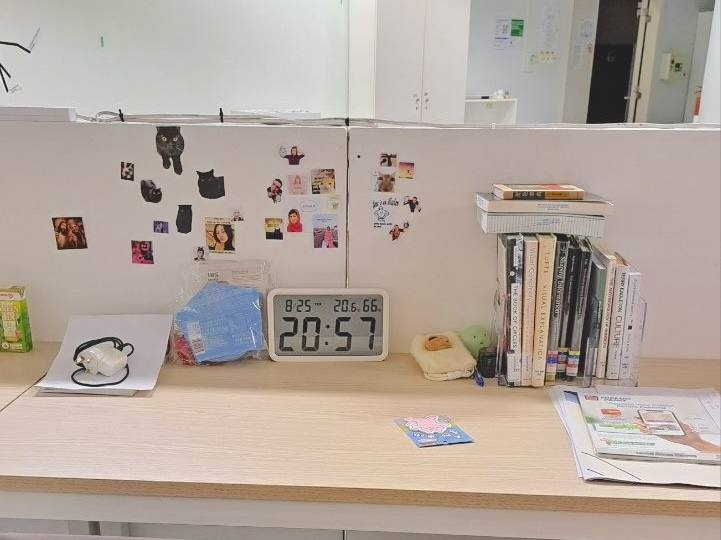
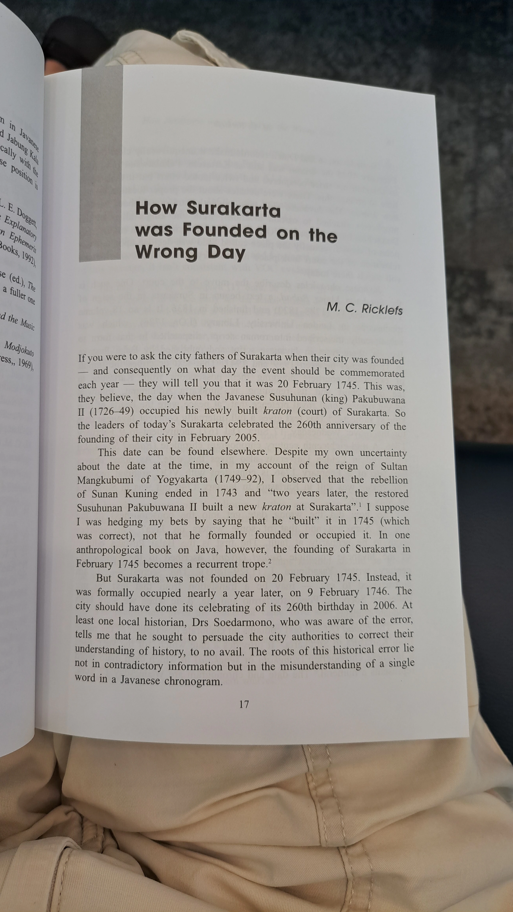
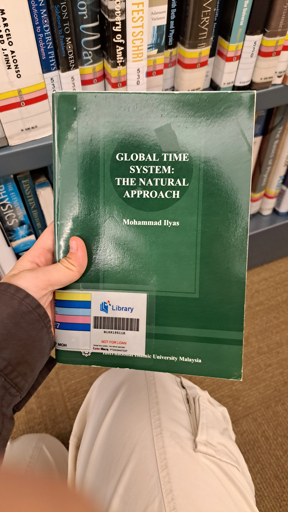
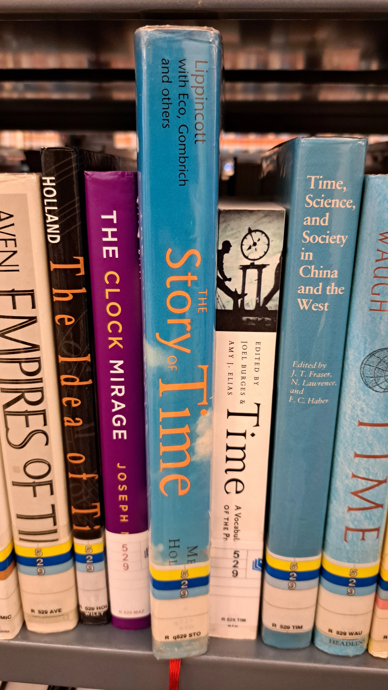
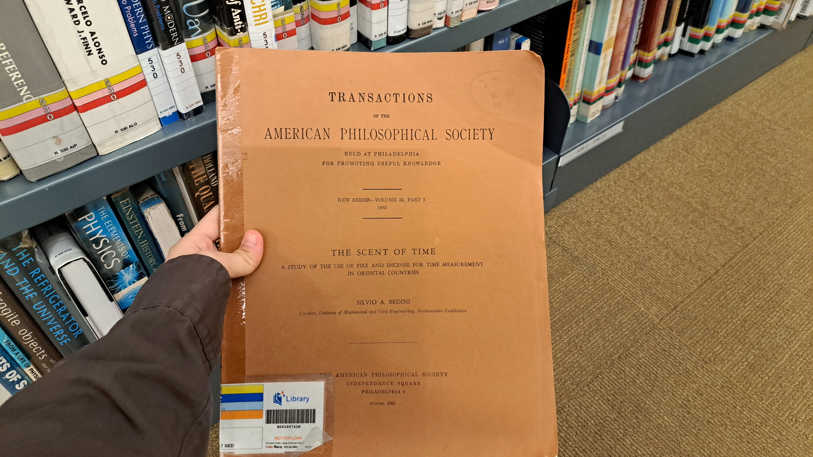
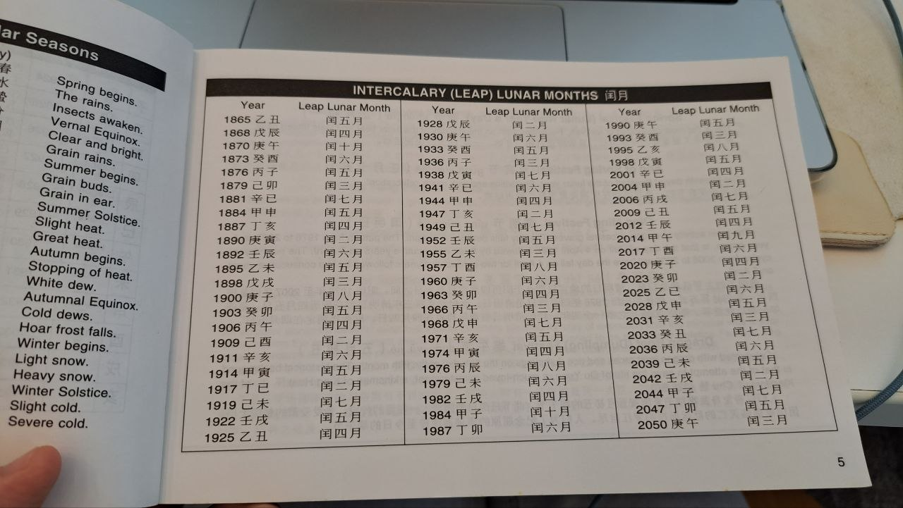
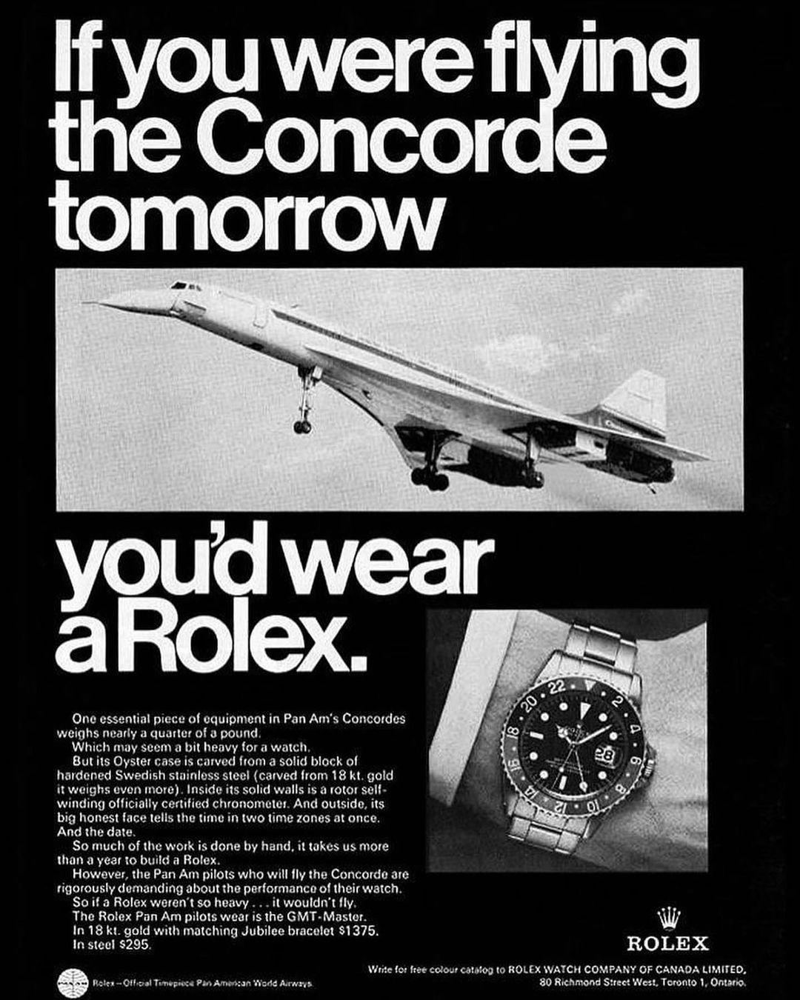

The one with 4-ish talks

Talk 01 Introduction to the Dissertation module
We kicked off the first day of school with a talk by Vikas regarding the Dissertation module—which was mostly just administration matters and things to take note on regarding the writing. The key things that he reiterated was to have ensure that there was a clear understanding of our objectives. Vikas emphasised that it was not neccessarily an argument, but more of a well-informed discussion, which made me think about what Hera had taught us last year—about how it was like a dinner party.
Since it was also our last academic year (last year as a student probably), we should also think about trying new things and experimenting and tread out of our comfort zones. He also emphasised on being timely, and come with multiple revisions for our lecturers to comment on.
Talk 02 On Design Research Frameworks
Vikas went through the various frameworks, starting off with introducing a piece of writing that introduced himself to the realm of design writing,"Writing for the Design Mind".
One thing that got me thinking was: "Who would my target audience be?" This honestly sent me abit into a panic as I feel that my research topic did not have a specific target audience. If I had one, it would probably be anyone standing on the Earth, experiencing and referring to time (which is everybody!). But that's something I would worry about later on.
We should also think about the writing style that we were leaning towards. He mentioned that "reflective writing" was possible, which was a style of writing that was more personal, which he cited "writing for the design mind" as an example. I think I would probably go for this style as I do enjoy reading more engaging pieces with bits of personal stories weaved in between the heavier, academic research. It also adds a nice human touch to the paper.
Talk 03 On the RPO
In our RPO, we don't have to save the world (woohoo!), its more of introducing a different way of looking at things.
Needs to be descriptive yet concise. He also discouraged the use of witty titles or any inside jokes.
We don't have to explain the entire RPO in the subtitles, but emphasise on the communities/user groups that are relevant to the research
Establish the bounds of the research here. When referring to entire countries, we need to specify which part of the country it is—Vikas brings up the example of China and Jakarta, which consists of a lot of counties. So we need to be realistic..after all its a small-scale project that's happening over the course of 3 months.
Vikas advised us to not include too many quotations from the books/articles, we should start to formulate our own sense of judgement and critique. This was a tip I found really useful while writing the RPO! We should definitely not just blindly copy the quotes, but also demonstrate our understanding of it.
Rather than drawing from methods from foreign countries (unless the topic is based in other countries), we should look at drawing from local cultures, which I think would make the research approach more unique and localised. Analysing results from our research enquiries is also a key skill. He emphasised on the importance of venturing far beyond interviewing classmates from D301.
"Run alongside your classmates who run fast."
Talk 04 On Grad Proj
We went for a short break on Wednesday, but came back on Thursday for a short talk on the graduation project. Once again, Vikas emphasised on how it was our last opportunity to spend a whole year on a project with a focus on a topic that we felt passionate about. Naturally, we should be going all out!
There were also different electives, labs and talks that we could attend throughout the year if we chose to, which would be a big help in our final outcomes.
Introduction to the Cultures Atelier
We also had our first few atelier meetings. Shu Min went through the requirements for our first presentation on Week 2, and showed some examples of past students' CPJs, across different formats like print, web and google docs.
I was really inspired by both Eugenia and Gwenyth's CPJs (unfortunately I forget to take pictures of Gwenyth's work!). I really liked how Gwenyth injected a sense of humor and personality into her headlines (I took inspiration from her!), which creates a fun reading experience, rather than just dividing each entry by "Week 1, Week 2, Week 3" [1]. I really liked Eugenia's neatness and detail in the presentation of her CPJ, and the hand-drawn elements also made the process feel very authentic.
We were advised to do a website for our CPJs, so I'll be going with a web format I suppouse! I want to challenge myself with coding, and it's not like its my first time creating a website. With AI tools like Claude (I've heard many things about its coding abilities), it'll be pretty simple to upload my own wireframes and get the code from there, and still not overly rely on it.
Coincidentally, this became a key part of my research interest (defining time through events rather than through quantities)
In preparation for our atelier presentation
I headed to the central library to stock up on some readings in preparation for the upcoming atelier presentation where we would be introducing our topic and tentative research question to the class. I was pleasantly surprised to find a small section at Level 7, Shelf 22, which focused on time. There were books that focused specifically on how time was derived from astronomical calculations, time perception, philosophy of time and even specific case studies from the Southeast Asian region.




Readings of
the week (╭ರ_•́)
The Comparative Solar & Lunar Calendar (1864—2043)

This book was mostly about cross-referencing between the Gregorian and Lunar Calendars. It was mostly used for tracing ancestral lineage, and to quote the author, “You can now celebrate your birthday twice each year, once each according to the two calendars!” Through this, I learnt that time reckoning was based on a lot of trial and error; time is not accurate! But I find it almost endearing that humanity strives for accuracy in measurements and in establishing a "true time"!
But to be honest, I felt this book isn't as useful for my inquiry, but I think it’ll help if I’m trying to read the Chinese calendar in particular. Mostly references on different years in the past and how the year is segmented into the different months. Some Januaries are actually considered to be from the year prior. What’s interesting is who constructed this calendrical systems (various rulers from Chinese dynasties like Huang Di (who could be a mythical character) ) It’s interesting to see that people who are born on the same year could be considered a year older.
Object-oriented Identity:
Cultural belongings from our recent past

A Rolex advertisement that was mentioned in the book "Object-Oriented Identity". I was particularly drawn to this section for obvious reasons—its a clock! The author mostly talks about the Rolex as a symbol of status, especially since its an expensive, luxurious object. It not a neccesity anymore, as we can easily tell the time by just tapping our phones. So why do people still purchase it?
There's a saying that goes, "Nobody in business will treat you seriously if you do not have a good mechanical watch". The author defines it as an object of "conspicuous consumption", an object you wear that is part of your identity and reflects well on your person.
This was definitely more relevant to my study than the above book, but focuses mainly on the consumer culture of it, which is still relevant! Sadly there was only one small section (a few pages :( ) But I did enjoy reading the introduction, which delves a little bit on culture, and how identity is constructed. Identity is very fluid!
This week felt like the calm before the storm. I still felt a little lazy as I had just completed my internship, so the dark reality of FYP hadn't settled in yet. Even though there's still quite a long way to go, I'm excited to see where this project would lead!